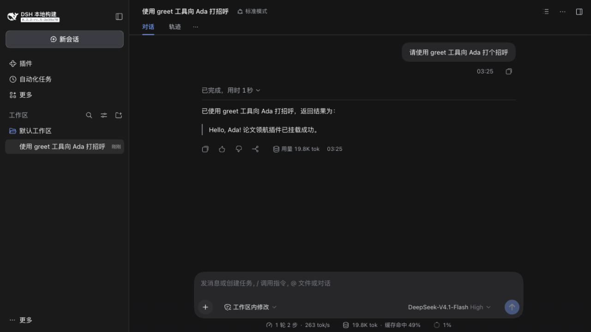

演示：真实运行轨迹
以下全部来自 2026-11-21 的真实运行，工具调用逐条记录在 eval/traces/tool-calls.jsonl，笔记落在 notes/，均可复现。
一、网页会话：一句话读一篇（2210.03629 · ReAct）

二、「编造的指标被退回」完整记录（2106.09685 · LoRA）
这轮同时是一次机制演示：提示模型第一次故意提交编造指标。退回信息还抓到一个意外收获——一条内容真实但含 Unicode 字符差异（∆ vs Δ）的引用同样被拒，展示了校验的严格度。工具轨迹（来自 jsonl，逐条原样）：
| # | 工具 | 参数 | 结果 |
|---|---|---|---|
| 1–2 | fetch_arxiv | 2106.09685 | 网络抖动失败 ×2（工具内置退避重试前模型自行重试） |
| 3 | fetch_arxiv | 2106.09685 | 成功：26 页 |
| 4 | list_sections | — | 10 个章节块 |
| 5–9 | read_section | §4/§5/§5/§7/§8（max_chars 4000–12000） | 共 25310 字符入语料 |
| 10 | write_note | 第 1 版笔记 | 退回：2 条引用问题 |
| 11 | write_note | 修正后重交 | 15 条引用全部命中 → 落盘 |
被退回的第 1 版：工具原始返回（点击展开）
[write_note] 引用校验未通过（2 条问题），笔记未写入：
1. metrics[0]：「The LoRA method achieves 99.9% accuracy on all
benchmarks」—— 在已获取的原文（摘要 + 已读章节）中找不到这句
2. method.quotes[1]：「We use a random Gaussian initialization for A
and zero for B, so ∆W = BA is zero…」—— 找不到这句（∆ 字符与原文
Δ 不一致，合并空白救不了它）
处理方式：引用必须逐字来自摘要或已读章节的返回文本（校验只合并空白
字符）。可以先 read_section 补读相关章节，再修改后重新提交完整笔记。
不要凭记忆写数字。模型修正后的自述（点击展开）
被退回的引用：metrics[0].quote 里的编造句 "The LoRA method achieves 99.9% accuracy on all benchmarks"。修正后换成摘要原句 "LoRA can reduce the number of trainable parameters by 10,000 times and the GPU memory requirement by 3 times."；另一条换成纯 ASCII 的原句。重提后 15 条引用全部命中，笔记已写入 notes/2106.09685.md。
三、长论文裁剪：144 页综述只读十分之一（2303.18223）
| 指标 | 数值 |
|---|---|
| 论文页数 | 144 页（A Survey of Large Language Models） |
| read_section 次数 | 13 次（模型按目录挑 §3/§11/§12/§15/§21/§28/§38 等） |
| 读入正文合计 | 35,773 字符（约为整篇正文的十分之一；技能上限 12000 词） |
| write_note | 第 1 版退回 15 条引用问题 → 补读 4 节 → 第 2 版通过落盘 |
四、第 1 周挂载验证（留档）
